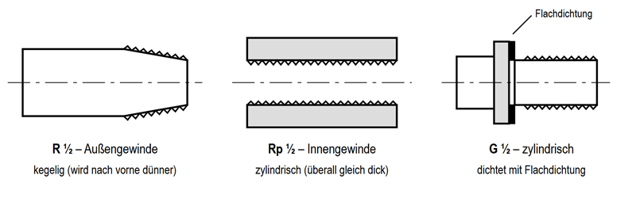
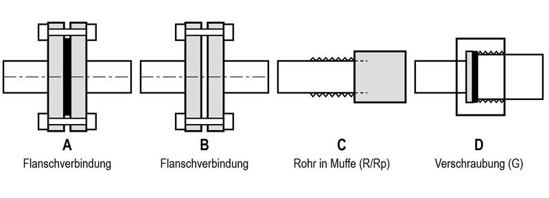
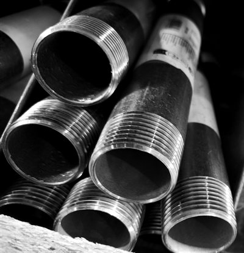
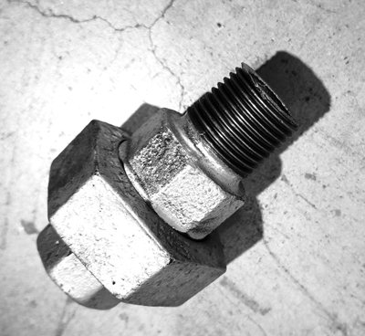
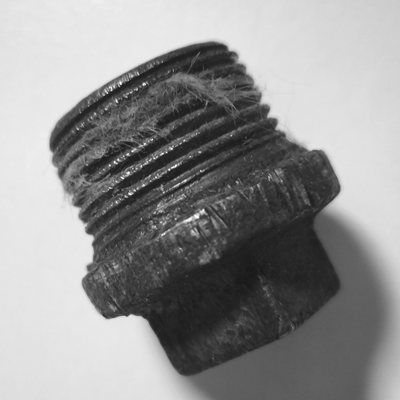
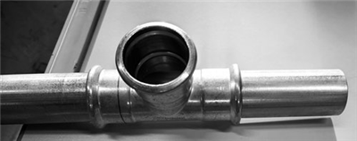
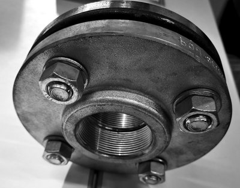

Stahlrohr, Gewinde, Flansche
Heute lernst du: wo man Stahlrohre verwendet, welche Gewinde es gibt, wie man ein Gewinde dichtet und wie ein Flansch aufgebaut ist.
So arbeitest du: Lies zuerst den grauen Infokasten. Mach dann die Aufgaben darunter. Die Antworten findest du im Infokasten. Fertig? Tippe bei jeder Aufgabe auf „Prüfen“. Bessere deine Fehler aus.
„Mehr wissen ★★★“: erweiterte Aufgabenstellungen.
Infokasten A: Wofür nimmt man Stahlrohr? (Einsatz von Stahlrohren)
|
Stahlrohre sind sehr stabil, druckfest und hitzebeständig. Sie sind aber schwerer als Kunststoffrohre und lassen sich nicht so leicht bearbeiten. Viele Arbeiten macht man heute mit Kunststoffrohr. Bei großen Durchmessern (ab DN 50) nimmt man aber weiter Stahlrohr. Es gibt 2 Oberflächen:
Stahlrohre verbindet man mit Gewinde, durch Schweißen oder durch Pressen. Beim Pressen musst du die Einstecktiefe markieren. Das ist die Stelle am Rohr, bis zu der es im Pressverbinder stecken muss. Merke: Verzinkt für Wasser, schwarz für Gas und Heizung. |
Aufgabe 1 ★ leicht – Richtig oder falsch?
Lies Infokasten A. Kreuze an: richtig (R) oder falsch (F).
| Satz | R | F |
|---|---|---|
| Stahlrohr ist leichter als Kunststoffrohr. | ||
| Stahlrohr hält hohen Druck und Hitze aus. | ||
| Bei großen Durchmessern nimmt man oft Stahlrohr. | ||
| Stahlrohr kann man nur schweißen, sonst nichts. |
Aufgabe 2 ★ leicht – Verzinkt oder schwarz?
Lies Infokasten A. Welches Rohr nimmst du? Kreuze in jeder Zeile 1 Kästchen an.
| Leitung | verzinkt | schwarz |
|---|---|---|
| Gasleitung zur Gastherme | ||
| Heizungsrohr im Heizraum | ||
| Alte Trinkwasserleitung im Keller |
Infokasten B: Welche Stahlrohre gibt es? (Rohrarten)
Achtung: Die Zoll-Zahl ist nicht der Außendurchmesser. Ein ½"-Rohr ist außen 21,3 mm dick. Schau in die Tabelle:
So bestellst du: Menge – Rohrart – Oberfläche – Größe. Beispiel: 10 lfm Gewinderohr verzinkt ½". (lfm = Laufmeter) Innendurchmesser rechnen (kennst du aus Thema 03): d = D − 2 · s (D = außen, s = Wandstärke) Beispiel: Gewinderohr 2" = 60,3 × 3,6 mm. 2 · 3,6 mm = 7,2 mm → d = 60,3 mm − 7,2 mm = 53,1 mm Merke: Die Zoll-Zahl ist nicht der Außendurchmesser. Schau immer in die Tabelle. |
Aufgabe 3 ★ leicht – Füll die Tabelle aus
Lies Infokasten B. Schreib den Außendurchmesser in mm in die Tabelle.
| Gewinderohr | Außen (mm) |
|---|---|
| ½" | |
| 1" | |
| 1½" | |
| 2" |
Aufgabe 4 ★★ mittel – Rohr bestellen
Dein Chef sagt: „Wir brauchen für die Trinkwasserleitung noch 12 m verzinktes Gewinderohr. Außen ist es 26,9 mm dick.“
Lies Infokasten B. Welche Bestellung ist richtig? Kreuze 1 Kästchen an.
| 12 lfm Gewinderohr verzinkt 26,9" |
| 12 lfm Siederohr schwarz ¾" |
| 12 lfm Gewinderohr verzinkt ¾" |
Aufgabe 5 ★★★ schwer – Wie groß ist das Rohr innen?
Lies Infokasten B. Rechne in den Schritten: d = D − 2 · s
Siederohr: D = 60,3 mm, s = 2,9 mm
| 2 · s (mm) | |
| d (mm) |
Präzisionsstahlrohr: D = 54 mm, s = 1,5 mm
| 2 · s (mm) | |
| d (mm) |
Infokasten C: Welche Gewinde gibt es? (Rohrgewinde R, Rp und G)
|
Gewinde gibt es innen (Innengewinde, IG) und außen (Außengewinde, AG). 1. Anschlussgewinde R und Rp (für Rohre und Fittings): Das Außengewinde R ist kegelig. Es wird nach vorne dünner. Das Innengewinde Rp ist zylindrisch. Es ist überall gleich dick. Schraubst du sie zusammen, wird das kegelige Gewinde immer enger. Die schrägen Seiten vom Gewinde (Gewindeflanken) drücken fest aneinander. So wird es dicht. Das heißt metallisch dichtend. Hanf oder Band füllen nur die kleinen Lücken aus. Ein Gewindegang ist eine Rille vom Gewinde, also eine Umdrehung. 2. Befestigungsgewinde G (für Hähne, Ventile, Verschraubungen): Es ist zylindrisch. Das Gewinde selbst dichtet nicht. Dicht wird es durch eine flache Dichtung, die Flachdichtung. Vorteil: schnell ein- und ausbauen. Außengewinde schreibt man mit A: G ½ A. 
|
Manche Eckventile haben ein selbstdichtendes Gewinde. Dort brauchst du keinen Hanf und kein Band. Merke: R und Rp dichten im Gewinde. G dichtet mit einer Flachdichtung. |
Aufgabe 6 ★★ mittel – Lies die Gewinde-Bezeichnung
Lies Infokasten C. Kreuze in jeder Zeile an: innen oder außen? Und: Wie wird es dicht?
| Bezeichnung | innen | außen | Hanf/ Band | Flach- dichtung |
|---|---|---|---|---|
| R ¾ | ||||
| Rp 1 | ||||
| G ¾ A | ||||
| G ½ |
Welches Gewinde aus der Tabelle ist kegelig? Kreuze an.
| Rp 1 | R ¾ | G ½ |
Infokasten D: Wie schneidet man ein Gewinde? (Gewindeschneidmaschine)
|
Das kegelige Außengewinde R schneidest du mit der Gewindeschneidmaschine: 1. Rohr auf Länge schneiden und entgraten (scharfe Kante weg). 2. Rohr in die Spannbacken einspannen und fest anziehen. So verdreht es sich nicht. 3. Passenden Schneidkopf einsetzen (z. B. R ½). Im Schneidkopf sitzen die Schneidbacken. Das sind die Messer, die das Gewinde schneiden. Schneidöl bereitstellen. Das Öl kühlt und schont das Werkzeug. 4. Maschine im Vorwärtslauf. Schneidkopf langsam an das Rohr führen. Das Gewinde wird geschnitten. 5. Ist das Gewinde lang genug: Maschine kurz rückwärts laufen lassen. So kommt der Schneidkopf wieder heraus. 6. Rohr herausnehmen, Gewinde reinigen und prüfen. Merke: Beim Gewindeschneiden immer Schneidöl verwenden. |
Aufgabe 7 ★★ mittel – Gewinde schneiden
Lies Infokasten D. Schreib die Nummern 1 bis 6 in die richtige Reihenfolge.
| Schritt | Nr. |
|---|---|
| Maschine kurz rückwärts laufen lassen. | |
| Rohr auf Länge schneiden und entgraten. | |
| Gewinde reinigen und prüfen. | |
| Rohr in die Spannbacken einspannen. | |
| Schneidkopf langsam an das Rohr führen. Das Gewinde wird geschnitten. | |
| Schneidkopf einsetzen und Schneidöl bereitstellen. |
Infokasten E: Womit macht man das Gewinde dicht? (Dichtmittel und Drehmoment)
|
Für die kegeligen Gewinde R und Rp gibt es 3 Dichtmittel. Vor dem Dichten reinigst du immer das Gewinde.
Hanf nimmt man zusammen mit einer Dichtpaste. Die Paste macht den Hanf geschmeidig und hilft beim Dichten. | |||||||||||||||||||||||||||
|
Das Drehmoment sagt, wie fest du eine Verbindung anziehst. Es hängt von 2 Dingen ab: wie stark du drückst (Kraft) und wie lang der Schlüssel ist (Länge). Drehmoment = Kraft · Länge, die Einheit ist Nm (Newtonmeter). Ziehst du zu wenig an, löst sich die Verbindung und wird undicht. Ziehst du zu fest an, geht das Teil kaputt. Wie fest, steht in der Anleitung vom Hersteller.
Merke: Gewinde immer reinigen, dann dichten. Nicht zu fest, nicht zu locker anziehen. |
Aufgabe 8 ★★ mittel – Welches Dichtmittel?
Lies Infokasten E. Welcher Buchstabe passt? Tipp ihn in das Feld.
A einfach, hält viel Chemie aus – B hält nur kaltes Wasser aus – C kann man nicht zurückdrehen, nur bis 1¼" – D kann man zurückdrehen – E teuer – F viel Arbeit, Materialverlust, nicht jede Chemie
Achtung: 1 Buchstabe bleibt übrig.
| Dichtmittel | Vorteil | Nachteil |
|---|---|---|
| Hanf | ||
| Dichtschnur | D | |
| Teflonband |
Aufgabe 9 ★★ mittel – Ist es fest genug?
Du hast ein Rohr mit R-Gewinde in eine Muffe geschraubt. Dein Chef fragt: „Woher weißt du, dass die Gewindeverbindung fest genug angezogen ist?“
Lies Infokasten E. Was ist eine richtige Kontrolle? Kreuze an: richtig (R) oder falsch (F).
| Satz | R | F |
|---|---|---|
| Ich nehme einen Drehmomentschlüssel. Er macht „Klick“. | ||
| Ich ziehe so fest an, wie ich kann. | ||
| Ich zähle die Umdrehungen nach der Anleitung. | ||
| Es müssen noch 10 Gewindegänge zu sehen sein. |
Infokasten F: Was ist ein Flansch? (Flanschverbindung)
|
Eine Flanschverbindung ist eine lösbare Verbindung. Man nimmt sie bei großen Rohren und dort, wo man oft etwas aufmachen muss, zum Beispiel bei Pumpen und Armaturen. So ist sie aufgebaut: 2 Flansche (runde Scheiben am Rohr), dazwischen eine Dichtung, außen herum Schrauben und Muttern. Die Schrauben sitzen auf einem Kreis, dem Lochkreis.
Die Schrauben ziehst du über Kreuz an. Dann sitzt die Dichtung gerade und wird nicht kaputt. So geht es bei 4 Schrauben: 1 oben, 2 gegenüber (unten), dann eine Vierteldrehung weiter: 3 rechts, 4 gegenüber (links). Bezeichnung: Flansch DN 25/33,7 PN 6 → DN 25 = Nennweite (die Größe vom Rohr), 33,7 = Rohr außen in mm, PN 6 = Nenndruck 6 bar (so viel Druck hält der Flansch aus). Je höher der Druck (PN), desto mehr oder dickere Schrauben braucht der Flansch.
Alle Maße in mm. Merke: Flansch = lösbar. Dichtung dazwischen, Schrauben immer über Kreuz anziehen. |
Aufgabe 11 ★ leicht – Schrauben über Kreuz anziehen
Lies Infokasten F. Warum ziehst du die Schrauben über Kreuz an? Kreuze 1 Kästchen an.
| Damit es schneller geht. |
| Damit die Dichtung gerade sitzt und nicht kaputt wird. |
| Damit man weniger Schrauben braucht. |
Aufgabe 12 ★★ mittel – Finde die Fehler
Ein Kollege hat 4 Verbindungen gemacht. 2 davon sind falsch.
a) Lies Infokasten C, E und F. Kreuze an: richtig oder falsch?

| Bild | A | B | C | D |
|---|---|---|---|---|
| richtig | ||||
| falsch |
b) Was ist bei Bild B falsch? Kreuze 1 Kästchen an.
| Zwischen den Flanschen fehlt die Dichtung. |
| Es sind zu viele Schrauben. |
| Die Rohre sind zu dick. |
c) Was ist bei Bild C falsch? Kreuze 1 Kästchen an.
| Die Muffe ist zu groß. |
| Es fehlt eine Flachdichtung. |
| Man sieht zu viele Gewindegänge. Das Rohr ist zu wenig eingeschraubt. |
Aufgabe 13 ★ leicht – Was siehst du auf den Fotos?
Diese Teile liegen im Lager.
 1 |
 2 |
 3 |
 4 |
 5 |
|
a) Lies die Infokästen C und F. Welcher Buchstabe passt zu welchem Foto? Tipp ihn in die Tabelle.
A Pressfitting aus Stahl (T-Stück) B Stopfen: verschließt eine Öffnung mit Innengewinde C Gewindeflansch: Flansch mit Innengewinde, mit Schrauben verbunden D Lötfitting aus Kupfer E Gewinderohr-Stücke mit Außengewinde R (Nippel) F Verschraubung: verbindet 2 Rohre, man kann sie wieder lösen
Achtung: 1 Buchstabe bleibt übrig.
| Foto | Buchstabe |
|---|---|
| 1 | |
| 2 | |
| 3 | |
| 4 | |
| 5 |
b) Auf einem Foto siehst du Hanf im Gewinde. Welches Foto ist es? Foto Nr. ______
Mehr wissen ★★★: Wie macht man Stahlrohre? Wie rechnet man das Drehmoment?
|
Geschweißte Rohre: Ein Bandstahl wird zu einem Rohr eingerollt und verschweißt. Dann wird das Rohr auf ca. 1000 °C erhitzt und auf die richtige Größe gewalzt. Es wird auf 6 m abgeschnitten. Jedes Rohr kommt in eine Wasserdruckprobe mit 50 bar. Nahtlose Rohre: Ein voller Stahlblock wird auf ca. 1300 °C erhitzt und mit einem Dorn gelocht. Diese Rohre sind besonders genau und fest. Pressen statt Gewinde: Es gibt Pressverbinder für Gewinderohr und Siederohr (z. B. Viega Megapress). Du sparst dir das Gewindeschneiden und das Schweißen. Drehmoment rechnen (Formel aus Infokasten E): Drehmoment = Kraft · Länge (Kraft in N, Länge vom Schlüssel in m, Ergebnis in Nm) Beispiel: Du drückst mit 100 N auf einen Schlüssel mit 0,2 m Länge. 100 N · 0,2 m = 20 Nm |
Aufgabe 14 ★★★ schwer – Rechnen und vergleichen
a) Du drückst mit 150 N auf einen Rohrschlüssel. Er ist 0,4 m lang. Wie groß ist das Drehmoment? Die Formel steht im Kasten „Mehr wissen“.
| Drehmoment in Nm: |
b) Schau in Infokasten F: DN 80 PN 6 und DN 80 PN 16. Was stimmt? Kreuze 1 Kästchen an.
| PN 6 hat mehr Schrauben, weil er kleiner ist. |
| PN 16 hat mehr Schrauben, weil er mehr Druck aushalten muss. |
| Beide haben gleich viele Schrauben. |
c) Richtig oder falsch? Kreuze an.
| Satz | R | F |
|---|---|---|
| Nahtlose Rohre macht man aus einem vollen Stahlblock. | ||
| Geschweißte Rohre werden nie auf Druck geprüft. |
Aufgabe 15 ★★ mittel – Fachbegriffe
Fachbegriffe sind die Wörter, die man auf der Baustelle verwendet.
Welcher Fachbegriff passt zur Erklärung? Tipp den Buchstaben in das Feld.
Diese Fachbegriffe gibt es: A Drehmoment – B entgraten – C Flachdichtung – D Flansch – E Gewinderohr – F kegelig – G Kompensator – H Lochkreis – I Muffe – J Nenndruck PN – K Siederohr – L verzinkt
Achtung: 2 Fachbegriffe bleiben übrig. Tipp: Lies die Infokästen A bis F.
| Erklärung | Buchstabe |
|---|---|
| Das Stahlrohr hat eine Schicht aus Zink (silbern). Für Wasser. | |
| Stahlrohr mit dicker Wand. Man kann ein Gewinde darauf schneiden. | |
| Das Gewinde wird nach vorne dünner. | |
| Damit wird ein G-Gewinde dicht. | |
| Runde Scheibe am Rohr für eine lösbare Verbindung mit Schrauben. | |
| Der Kreis, auf dem die Schrauben vom Flansch sitzen. | |
| So viel Druck (bar) hält der Flansch aus. | |
| Wie fest du eine Verbindung anziehst: Kraft · Länge, in Nm. | |
| Die scharfe Kante am Rohrende wegmachen. | |
| Stahlrohr für große Durchmesser. Man schweißt es oder verbindet es mit Flansch. |
Aufgabe 16 ★★★ schwer – Fachbegriffe auf Englisch
Wie heißt der Fachbegriff auf Englisch? Tipp den Buchstaben vom englischen Wort in das Feld.
Diese Wörter gibt es: A bolt – B flange – C galvanized – D gasket – E hemp – F nut – G radiator – H steel pipe – I thread – J torque – K valve – L welding
Achtung: 2 Wörter bleiben übrig.
| Deutsch | Englisch |
|---|---|
| Stahlrohr | |
| Gewinde | |
| Flansch | |
| Dichtung | |
| Schraube | |
| Mutter | |
| Hanf | |
| Schweißen | |
| verzinkt | |
| Drehmoment |
Fertig? Tippe bei jeder Aufgabe auf „Prüfen“. Bessere deine Fehler aus.